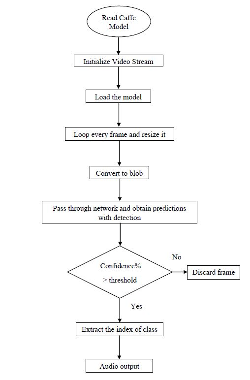
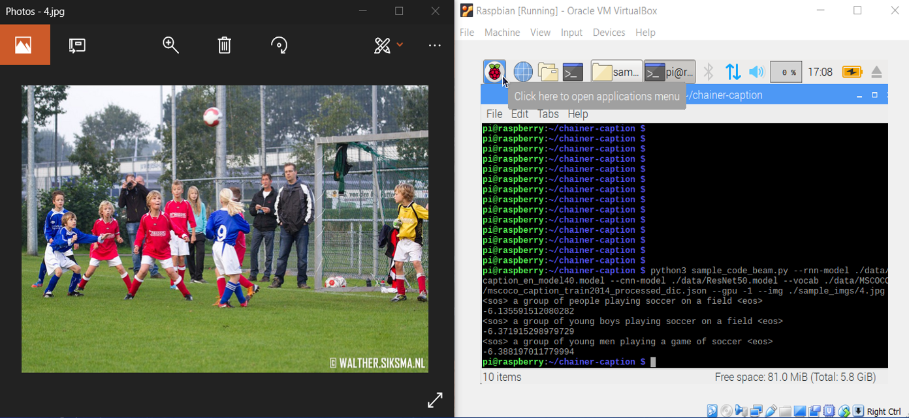
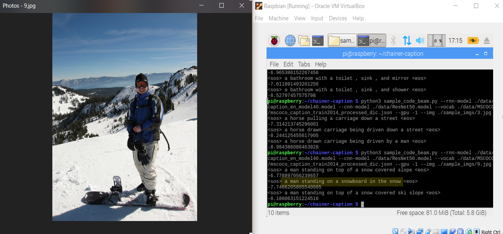

According to the official statistics from World Health Organization, an estimated 253 million people live with vision impairment: 36 million are completely blind and 217 million have moderate to severe vision impairment. This number will increase rapidly as the baby boomer generation ages. These visually impaired people have great difficulty in perceiving and interacting with the surroundings, especially those which are unfamiliar. Traditionally, most people rely on the white cane for local navigation, constantly swaying it in front for obstacle detection. However, they cannot adequately perceive all the necessary information such as volume or distance, etc. Despite the technological advancements, the visually impaired still rely on basic tools to interact with the world around them.
Deep Vision is an integrated and intelligent assistive device. Using machine learning and potentially IoT to give holistic understanding of the environment and subsequently process it into audio/tactile cues to aid visually impaired people for execution of high level task such as navigation, object placement/manipulation etc. It provides a comprehensive understanding of the environment that can assist the visually challenged to navigate independently, search and manipulate objects and possibly provide facial recognition capabilities.
Flowchart
The on-board camera uses a live video feed and captures images based on a fixed interval to understand the content of an image by encapsulating powerful machine learning models in an easy to use user interface. It quickly classifies images into thousands of categories, detects individual objects and faces within images, and finds and reads printed words contained within images. The individual using the device can be informed about the objects in line of sight of camera through auditory feedback. Tactile feedback does not block the auditory sense, which is the most important perceptual input source. Some sound feedback based ETAs map the processed RGB image and/or depth image to acoustic patterns or semantic speech for helping the blind to perceive the surroundings. Additionally, the exciting avenue of combining a powerful caption generating deep learning model with auditory feedback could be explored which would be a complete solution to the vision problem finally. We have tried to implement some aspects of this possibility. Deep Vision thus, helps in uplifting the visually differentlyabled to lead an independent and digitally connected life.
Here are a few results


The caption generation model based on CNN-LSTM/RNN is produces highly reliable outputs by describing images with amazing human like ability